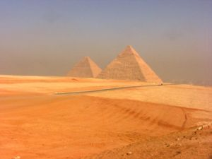
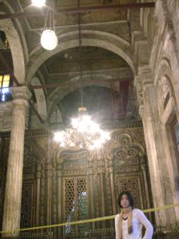
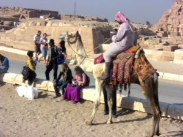
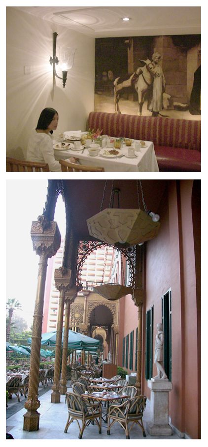
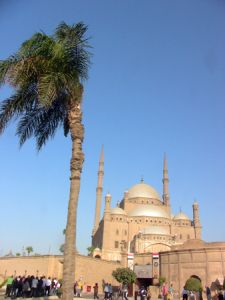

埃及掠影
到埃及才几个小时，我就开始后悔了，巴不得马上离开这个国家。我为什么要来这里受罪？虽然五千年古国，一向吹嘘得神乎其神.我一向对埃及没有向往，连到大都会博物馆，一见到埃及部分必快快走过。不明白铺天盖地的游记都是怎么写出来的？而我勉强拍了不清不楚、不三不四的几张相片，实在挑不出略微可以的。
这是个没有色彩的国家，我没有办法像中国大陆，人人一博客上的相片，加色添彩，每张相片都鲜丽得如整容过头的风尘女子，怪异吓人，如同面对一杯加了过量色素的“果汁”。（到中国大陆，我从来不敢喝果汁）
埃及并非我们特意想去的，随着必经线路经过而已。也算有来过了吧，过后我想。但是是绝对不会再去的。
后来的有一天，有个学生说，当她回去台湾祖母的家园时，看到破破的墙上，有小动物在爬……她后悔了：我为什么要来这里？怎么想法和我一模一样呢？
从小，我好像不害怕“吃苦”，常有令大人惊讶无比的忍耐力，但是怕脏怕臭。
我一直在想，是不是我自己的问题？对脏与臭特別没有忍受能力？实际上，并没有我觉得的那么脏与臭？还是別人在这方面的忍受力都比我强？有人说，回去大陆，只能拍相片，而且只能对准特定的角度拍，若偏移了，垃圾杂物马上入镜……
埃及和中国大陆很相似，其一是那种黏糊糊的感觉，也许看着不脏，但一接触就知脏。没有“看到”脏不算脏？即使在招待外宾的餐厅，地毯、桌椅四处都黏糊糊的.连空气都得小心翼翼地呼吸。熟视无睹、习以为常是永远无法改进的原因之一。
其他更根本的负面因素，我一向避而不谈，无法改变的本质上的复杂问题，认真起来，也是能把一个走马观花的游客活活气死的。离开埃及有那么一阵子，埃及发生暴动内乱，完全在意料之中。再听到有游客在埃及乘坐的热气球爆炸……真是难过，游客真是太小看这个国家的混乱与不负责任的人心了。
还是不明白为什么有人喜欢埃及？是否没去过別的地方？没有风景，空气燥热而混沌
，民风凶神恶煞，物价胡乱嚷叫，国家博物馆破破烂烂，黑黑漆漆，推推搡搡，一半以上的日光灯盏破损或不亮，所有的厕所，包括国家博物馆的门口都有凶恶的男男女女把门要钱，气味恶臭，旅游巴士上的厕所常常堵住，实地里金字塔和狮身人面比相片中难看多了，空空荡荡的十分无聊……
文物没有丝毫的美感而言。有历史价值，并非有艺术价值。电影“埃及豔后”的场景是好莱坞的杰作，不是真正埃及的。
转了一圈又一圈，实在买不下如此丑陋的东西作纪念品。乍然，敲下一队台湾游客的喧嚷与尖叫，原来砍价太开心了。刚好，我是个讨厌讲价的人，一点乐趣也没有。
导游给了门票，看看风尘滚滚的遥远处才是金字塔的入口，于是懒得前往一探究竟。就在沙土堆中晃来晃去，没什么可拍的。一队又一队大陆游客在对面土坡上大声叫喊，几只小驴在土堆上闷头寻食,还有, 不是缠人的小贩，就是恶臭无比的驴驼。
通过层层严密保安检查，进入住于开罗的美国五星酒店里，立即有到家的感觉，马上松懈下来。埃及侍者也变得英俊与文质彬彬。黄昏降临，室外很多阿拉伯王公贵妇安然就坐，偶一大陆游客路过，趾高气昂，斜小眼睛恶狠狠地揪人,好像除了他之外，第二张亚洲面孔是不小心混进高级界地的。
房间比美国的大房间还大上四、五倍，山姆大叔欺负人家土地不用钱似的。从宽阔的阳台望下去，绿茵茵的一大圈子全属酒店的范围。再远处没有色彩的破落不堪属于另一个世界。
无论一个国家如何贫困破落，殖民地的特征就是富人们有办法将自己圈围在一处优雅的大院子里，轻松的悠闲著，外界与己无关，眼不见为净。否则，便得时时刻刻在提心吊胆中拿捏著优越感。
当地人的房子几乎没有一幢是盖好了的，听说没盖好的房子不用交稅，所以大家都住在施工没有完成的房子内，整个开罗几乎没有一条像样的道路。这样的生活品质，为什么还要盖新房？在回美的航班上，一个看似中国老知识分子，先问我是否是日本人？然后以汉语与我攀谈：“可以理解嘛，还需要改进嘛，慢慢来嘛。把自家里面布置漂亮一点就好了嘛……”我没想与他讨论埃及“可以理解”的丑恶人性与完全不管老百姓死活的政府,找个借口躲开了去。
让我最生气的不是当地人的爱钱如命与缺乏基本道德，整个首都，整个国家到处都是垃圾山，垃圾堆中惨不忍睹的可乐瓶子，缺德的商人！卖这种无用的东西给贫困国家的人民，并制造永远的汙染！
从入境到出境，一直有种似曾相识的感觉，随时随地一大堆闲人，包括警察，或坐或蹲或站。闲人多寡与国民生产总值成反比。
巴士疾驰的沙尘弥漫的公路边，常常有人将几款千篇一律的地毯搭在公路边上，焦急地向驰过的旅游巴士挥手。谁会停下来呢？谁会千里迢迢带这么无美感与特色的大地毯回家呢？为想赚钱又没脑子的人隐隐难过。
好容易看到一些正在洒水的农作物和少少的小工厂，总算有聪明人踏踏实实在赚钱。其实越没人干的活，越有利润和前途。
在离境大厅，我终于感动了。原本就稀少的垃圾筒，原想也就是点缀吧，做得极小。垃圾筒里装满了空的塑料水瓶，满了出来，于是大家规规矩矩地将空水瓶小心翼翼地摆在垃圾筒的周围。欧美游客的素质此时彰显了出来。（我所出入的那个海关大厅只开放给欧美旅客）.只是长期看到小垃圾筒不够用，政府也不知道得换些大的？
我不知道收垃圾的人如何处理这些瓶子？可能我们一转身，这些瓶子就被人顺手丟往大街去了？大街就是大垃圾场。
有一点，我很确定，中国人至少要面子！而埃及政府连面子都不要!所以中国大陆比埃及强太多了！中国游客大可不必因为有钱跑一趟埃及，拍几张相片，用软体加工后,风光地晒在博客上，而以埃及为骄傲和向往，向无法踏出国门的贫贱百姓显耀他（她）的异国风情万种。自欺欺人！